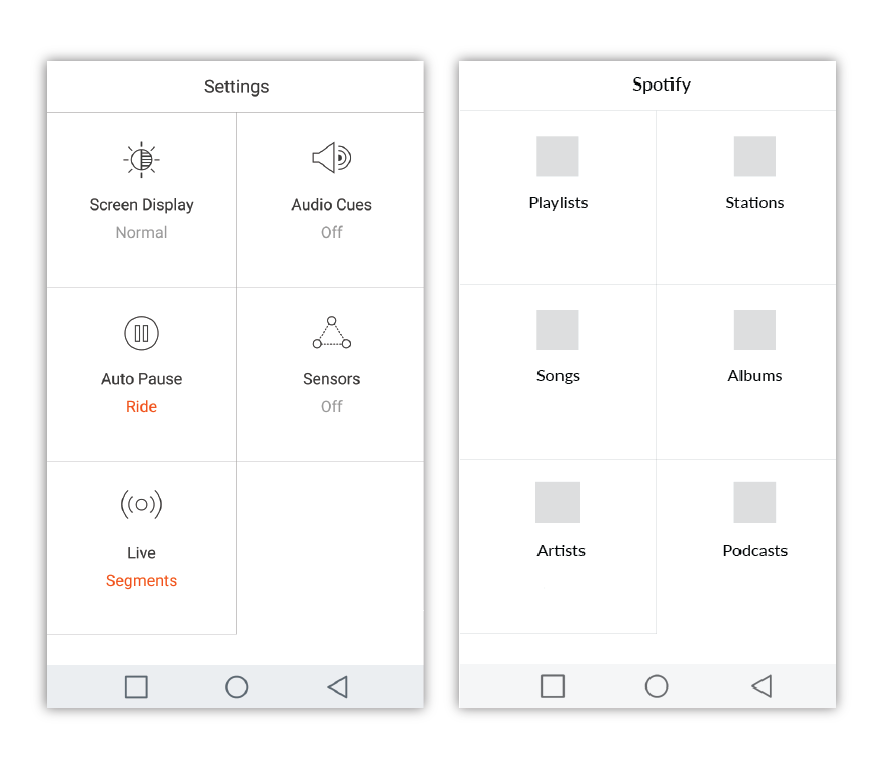
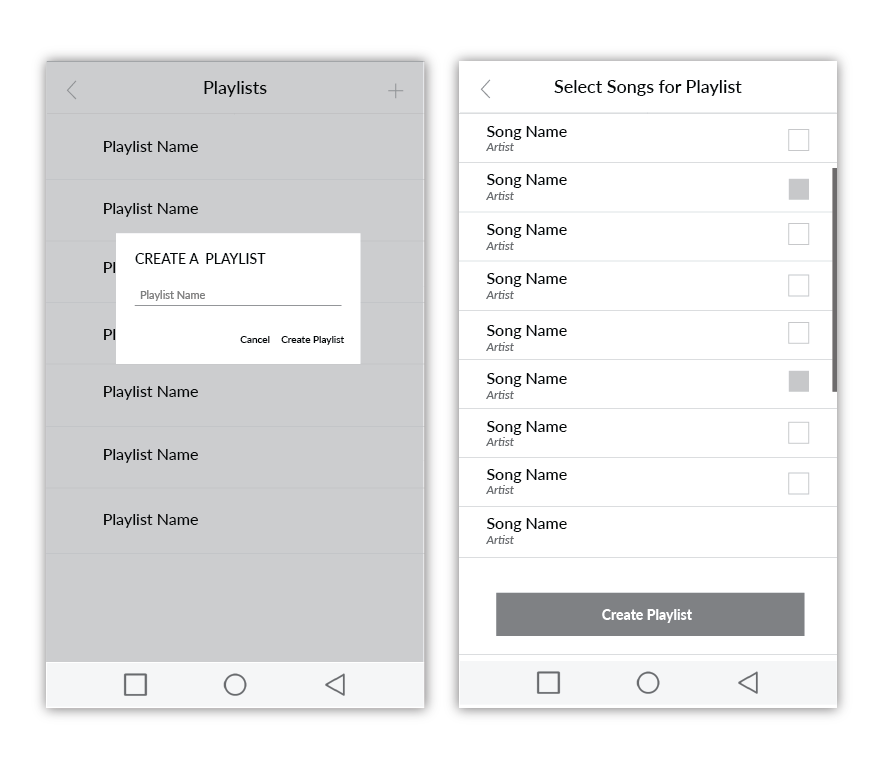
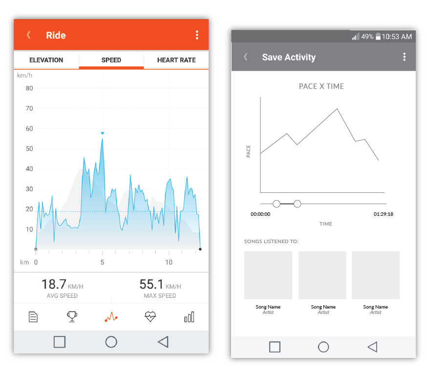
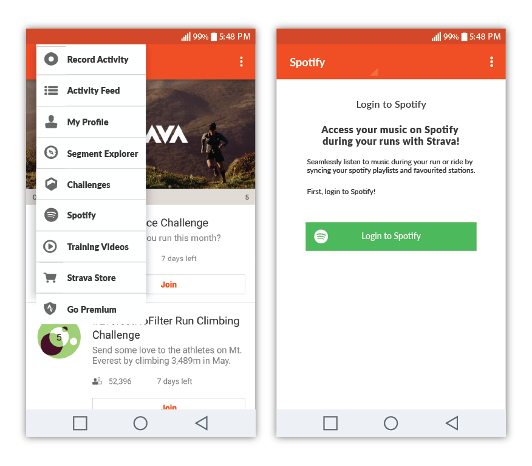
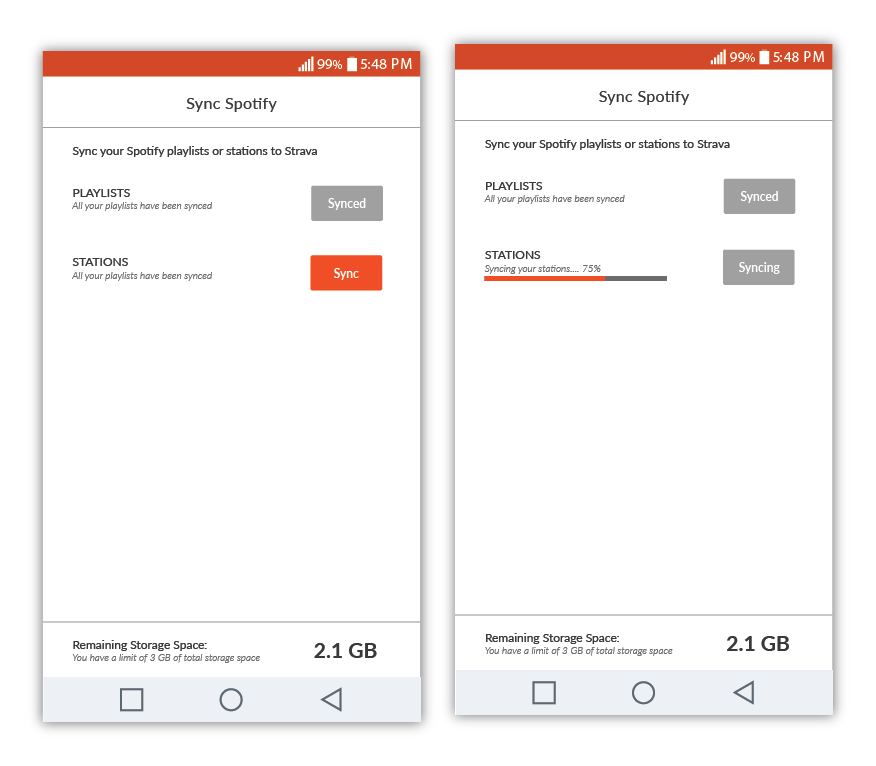

Summer Semester 2016
School Project
Team: Mandy Cheung, Michaela Tsumura
Strava is an application that track’s an athlete’s running/cycling time and distance travelled. We researched Strava’s position in the market and used IDEO research methods to better understand the app and how the app was being used. By understanding Strava better, we decided to partner Strava with Spotify, a music streaming app, to implement a music element into Strava. The music element will be useful and valuable for Strava users during and after their run/cycle as it will be more convenient for them while providing insightful information.
I conducted research using IDEO research methods. My partner and I then came together to discuss and compare our findings. After deciding Strava should implement a music feature, I sketched, made grey scale mockups and high fidelity mockups successfully implementing Spotify into Strava.
Activity Analysis: This method allowed us to get to know Strava better by going through the app and listing in detail all actions, tasks, objects, performers and interactions involved in a process.
Extreme User Interview: In order to find out more about how users use and feel about Strava, we made a questionnaire using Google Survey to conducted a survey with people that used Strava frequently.
Insights
Opportunities
We analyzed the design elements in the Strava's Android app by taking screenshots of every screen we came across. We paid attention to the flow of the app, buttons, icons, navigation bars and typography. This was our guideline to keep consistent with Strava's brand.
Strava's Brand elements extracted
Between the three choices:
We decided to go with integrating a music feature. This is because Strava lacks a music feature that a lot of their competitors already have.
These days, people mainly use streaming services to access music. It doesn't make sense for Strava to make their own music service because it will take away from the purpose of the app, to track running / cycling routines. Therefore, collborating with a music streaming service is probably best for Strava. In this case, we decided to collaborate Strava withSpotify.
However, implementing a music playing feature doesn't give enough value to stand out from their competitors. A music feature that can provide users useful information about their run/cycle corresponding to the music they listened to will allow users to see how to keep up a consistent pace during their run/cycle!
To seamlessly integrate Spotify into Strava, we looked at the current app to see where we can implement Spotify. We tried our best to use existing layouts to keep consistent with Strava. Such as Figure 2.
In Figure 3 and 4, is where the music feature is implemented; creating a playlist and choosing the playlist for the run/cycle.
Lastly, in Figure 5, it shows the progress of your run in correlation to the songs the user listened to during their run/cycle. Again, keeping consistent with graphics that already exist in the app.
Figure 1. Placing the Spotify feature in the drop down menu
Figure 2. Inspiration from the settings page, Spotify feature in Strava will use a similar layout
Figure 3. Creating a playlist in Strava

Figure 4. Selecting playlist before a run/cycle
Figure 5. A graph form to depict the progress of a user's run/cycle
Although our goal was to not turn Strava into a music app and mainly focus on being a running app, we made Strava have a very large section explicitly for music. For example, users would have been able to create playlists and choose certain songs, albuns, artists, stations to play from. When we realized this, we knew we had to change and rethink on how we want to execute the music feature without being too overpowering.
When people first access Spotify within Strava, they will be greeted to login to Spotify to access the information on Spotify. Instead of making a playlist on Strava, people will be have to pre-make their playlists on Spotify to be synced with Strava. They can also choose to sync stations that they are already following on Spotify.
Full screen dedicated to music.
Creating a Playlist in Strava
Logging into Spotify in Strava
Option to sync playlists or stations onto Strava
By implementing Spotify into Strava this way, users will be able to listen to music seamlessly while tracking their run/cycle. Strava also remains being a fitness app and users can see how the songs they listened to affect their performance.
The push for Strava users to make playlists on Spotify is a good incentive for Spotify to collaborate with Strava. Strava users will be introduced to Spotify through their app, and Spotify users can gain exposure to Strava by promoting healthy lifestyles for their customers.
Graphs showing how music Strava user listened to corresponded to their run
The IDEO research methods gave really good insights on Strava. Although more time to ask a larger group of people for the Extreme User Survey would have been more beneficial to recieve more feedback and painpoints of Strava.
This project is viable and beneficial for both companies because Strava customers will get exposure to Spotify and get an incentive to use Spotify as it is needed for Strava. Spotify users that have the ambition to become more fit will have an incentive to get more fit by using Strava. This collaboration will give exposure to the audience about the respective companies, which will mean more people using both applications, and in turn higher revenue for both companies.
Accessing music information in Strava